💾 1.1 Estructura física d'un disc
Gestor d’arrencada: és un programa que s’executa en encendre l’ordinador, abans que es carregui el sistema operatiu. Decideix quin sistema carregar i sovint mostra un menú per triar-ne un. A Ubuntu és GRUB.
Disc mecànic (HDD): guarda la informació en uns plats magnètics que giren, i un capçal que llegeix i escriu sobre ells. Té parts mòbils, així que és més lent i més fràgil als cops, però és més barat per gigabyte.
Disc sòlid (SSD): guarda la informació en memòria flaix, sense cap part mòbil. És més ràpid i més resistent als cops, però és més car per gigabyte.
🗂️ 1.2 Estructura lògica d'un disc
Format de particions del disc: és la manera com el disc es divideix en particions. Hi ha dos formats: MBR i GPT.
MBR (Antic / BIOS):
- Sol funcionar amb la BIOS tradicional.
- Té un límit de màxim 4 particions primàries.
- Només serveix per a discs de fins a 2 TB.
GPT (Modern / UEFI):
- Requereix el sistema modern UEFI.
- Permet fins a 128 particions.
- Admet discs de més de 2 TB (sense límit pràctic).
- Inclou còpia de seguretat automàtica per si es malmet.
🧱 1.3 Estructura de la informació
Sector
Definició: unitat física mínima del disc, de 512 bytes.
Partició
Definició: una part del disc que el sistema veu com una unitat independent, amb la seva pròpia mida i el seu propi sistema de fitxers.
Volum
Definició: abstracció que es posa per sobre de les particions. Pot combinar diverses particions o discs en una sola unitat i es pot redimensionar sense reparticionar el disc.
Diferència: una partició és una divisió física del disc, mentre que un volum és una capa lògica que la gestiona.
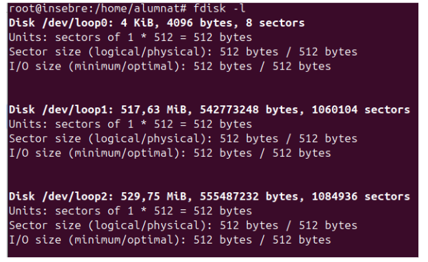
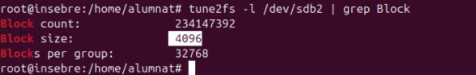
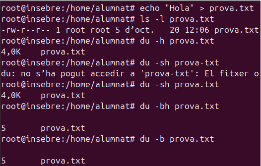
Fragmentació interna
Definició: espai desaprofitat dins d'un bloc quan el fitxer no l'omple del tot.
Fragmentació externa
Definició: fitxers guardats en blocs que no són contigus, repartits pel disc.
📁 1.4 Sistemes de fitxers
Els sistemes de fitxers més comuns són FAT32, NTFS i ext4.
1. FAT / FAT32 (File Allocation Table)
- Desenvolupador: Microsoft (creat als anys 70/90).
- Compatibilitat: universal. Funciona a Windows, Mac, Linux, consoles, TV i autoràdio.
- Inconvenient principal: té un límit de màxim 4 GB per fitxer. Si intentes guardar-hi una pel·lícula o una imatge ISO de més de 4 GB, dona error.
- Ús típic: pendrives USB antics o petits, i targetes SD de memòria.
2. NTFS (New Technology File System)
- Desenvolupador: Microsoft (sistema per defecte a Windows).
- Avantatges: permet fitxers gegants (sense límit pràctic), gestió de permisos de seguretat, compressió i registre de canvis (journaling) per evitar la pèrdua de dades si falla el corrent.
- Compatibilitat:
- Windows: lectura i escriptura total.
- Mac: només lectura per defecte (cal programari extra per escriure-hi).
- Linux: lectura i escriptura.
- Ús típic: discs durs interns i externs per a Windows.
3. Ext4 (Fourth Extended Filesystem)
- Desenvolupador: comunitat de codi obert (per defecte a la majoria de distribucions Linux).
- Avantatges: molt ràpid, extremadament estable, excel·lent gestió de permisos i fragmentació mínima.
- Compatibilitat:
- Linux: suport natiu.
- Windows i Mac: no el reconeixen directament sense eines especials.
- Ús típic: unitats i discs on s'executa el sistema operatiu Linux o servidors.
🧹 1.5 Tipus de formateig
Pas 0. Preparar-ho tot
0.1 Instal·lar photorec
sudo apt install testdisk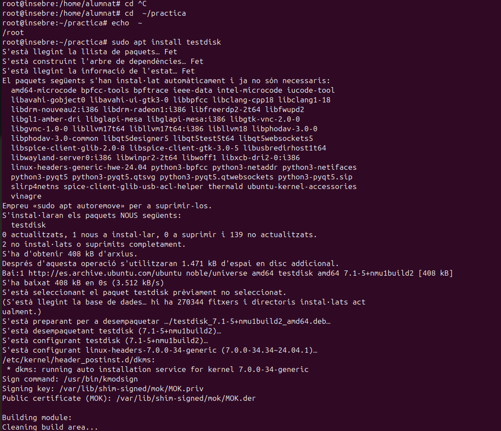
which photorec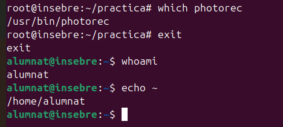
Resultat esperat: /usr/bin/photorec
0.2 Crear la carpeta de la pràctica
mkdir -p ~/practica
cd ~/practica
pwd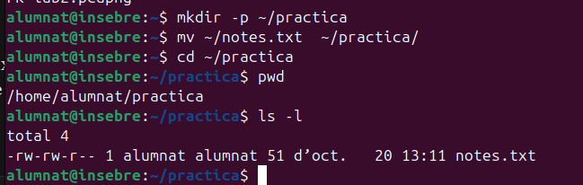
Resultat esperat: /home/alumnat/practica
0.3 Posar-hi els fitxers de prova
echo "El meu secret és que m'encanta la pizza amb pinya" > notes.txt
ls -l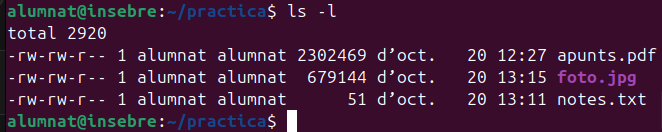
Part 1. Crear el disc virtual
1.1 Crear el fitxer
dd if=/dev/zero of=disc.img bs=1M count=200 status=progress1.2 Comprovar que existeix
ls -lh disc.img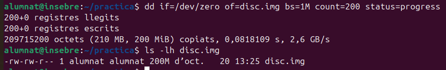
Part 2. Formatar el disc i desar-hi fitxers
2.1 Donar format al disc
mkfs.ext4 disc.img2.2 Muntar el disc
sudo mkdir -p /mnt/prova
sudo mount -o loop disc.img /mnt/prova2.3 Copiar-hi els fitxers
sudo cp foto.jpg apunts.pdf notes.txt /mnt/prova/
ls -l /mnt/prova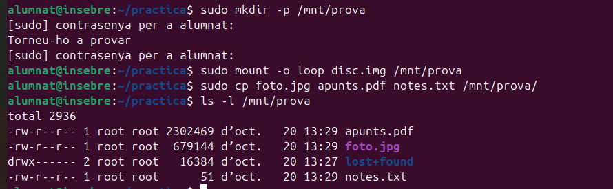
2.4 Desar els hashes dels originals
sha256sum foto.jpg apunts.pdf notes.txt > originals.sha
cat originals.sha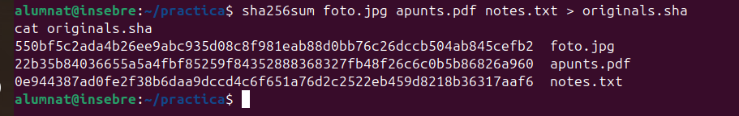
2.5 Desmuntar el disc
sudo umount /mnt/prova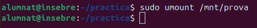
Part 3. Formateig d'alt nivell
3.1 Tornar a formatar (sense esborrar el contingut)
mkfs.ext4 -E nodiscard disc.imgEscriu y quan mkfs demani confirmació.
3.2 Comprovar què hi ha al disc
sudo mount -o loop disc.img /mnt/prova
ls -l /mnt/prova
sudo umount /mnt/prova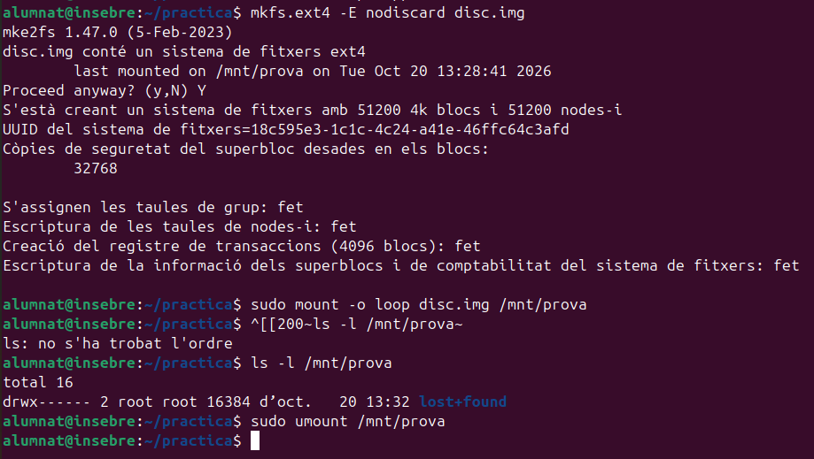
Resultat esperat: només lost+found.
Part 4. Recuperar els fitxers
4.1 Executar photorec
photorec /d recup /cmd disc.img
options,fileopt,everything,enable,search4.2 Veure què ha trobat
ls recup.1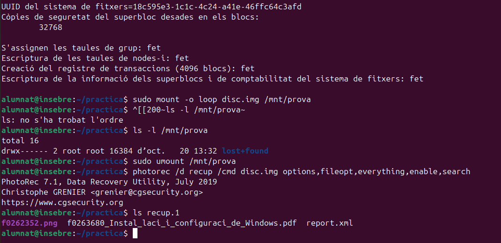
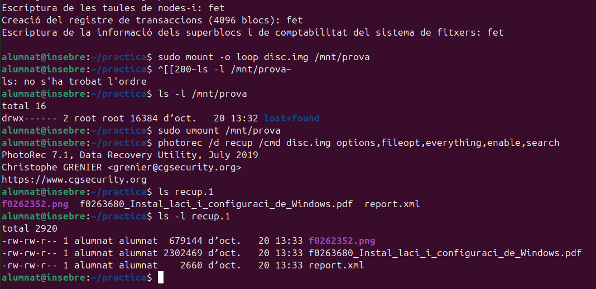
4.3 Comprovar que són idèntics
sha256sum recup.1/*
cat originals.sha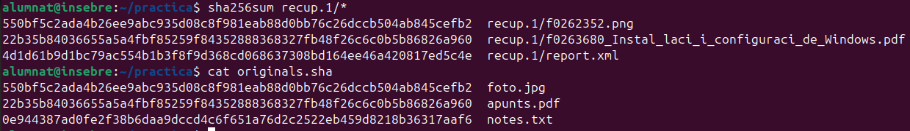
4.4 Buscar el text de notes.txt
strings -e S disc.img | grep pizza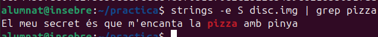
Part 5. Esborrat de baix nivell
5.1 Omplir el disc de zeros
dd if=/dev/zero of=disc.img bs=1M count=200 conv=notrunc status=progress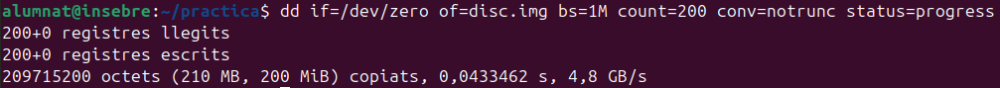
5.2 Tornar a intentar recuperar fitxers
photorec /d recup_zeros /cmd disc.img
options,fileopt,everything,enable,search
ls recup_zeros.15.3 Buscar el text un altre cop
strings -e S disc.img | grep pizza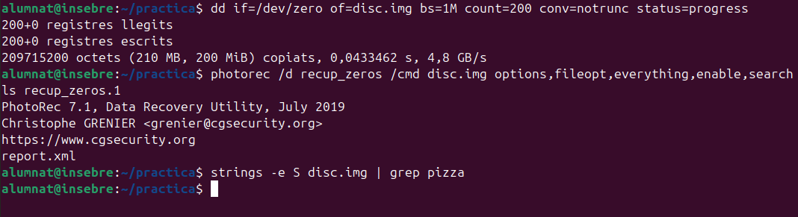
Neteja
cd ~/practica
rm -rf disc.img recup.1 recup_zeros.1 originals.sha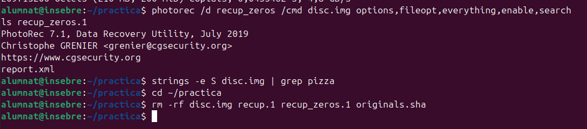
ls -l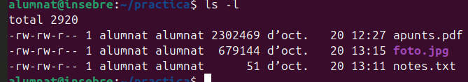
🔌 1.6 Particions i muntatge
Pràctica de classe:
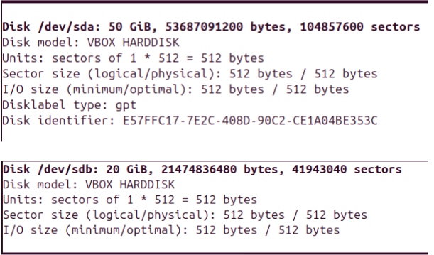
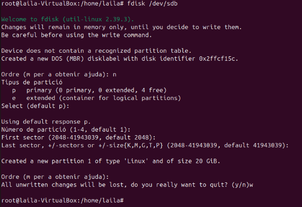
fdisk.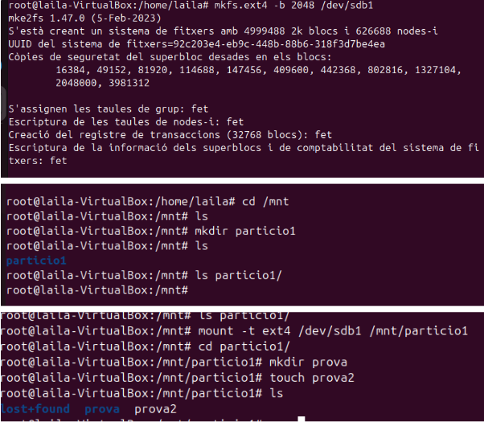
/mnt/particio1 i creació de fitxers de prova.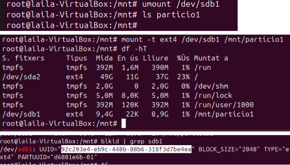
blkid per veure'n l'UUID.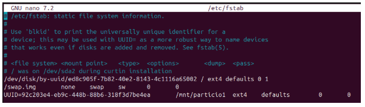
/etc/fstab, amb l'UUID, per muntar-la sempre.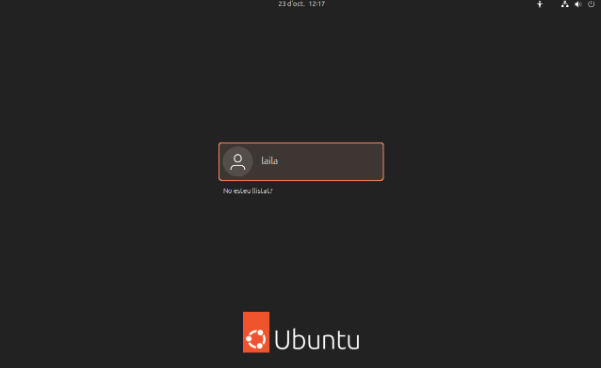
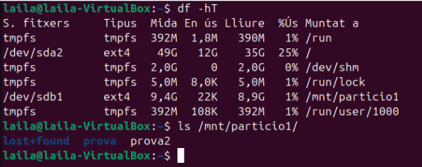
df -hT mostra /mnt/particio1 muntada i ls hi troba prova2.⚙️ 2. Gestió de processos
🔁 3. Còpies de seguretat i automatització de tasques
👥 4. Gestió d'usuari i grup i permisos
Gestió d’usuaris i grups:
Nivell 0 · Conèixer el sistema
Captures de la identitat del sistema: l’usuari actual, els UID i GID, les línies de /etc/passwd i la protecció de /etc/shadow.
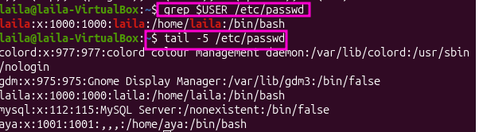
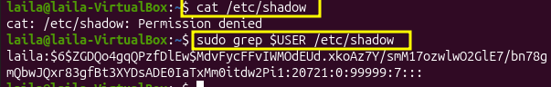
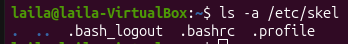
Nivell 1 · Crear usuaris
Creació d’usuaris amb useradd i adduser. Es veu com canvia /etc/passwd i com apareixen les carpetes a /home.
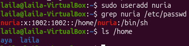
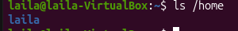
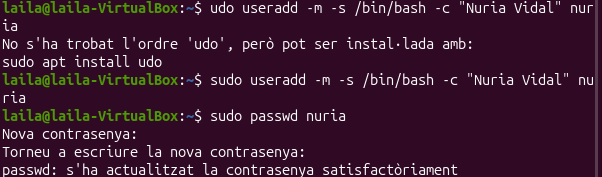
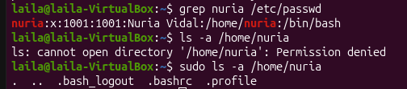
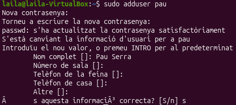
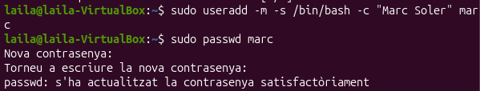
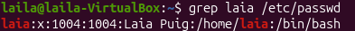
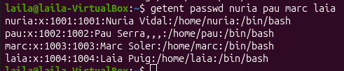
Nivell 2 · Iniciar sessió com a altre usuari
Canvi d’usuari amb su - i sessió oberta com a un altre usuari, on es comprova amb whoami i pwd.
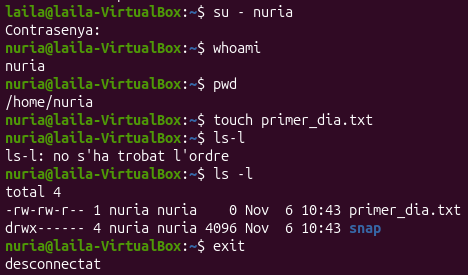
Nivell 3 · Crear i esborrar grups
Creació d’un grup amb el nom mal escrit, la seva aparició a /etc/group i el seu esborrat amb groupdel.
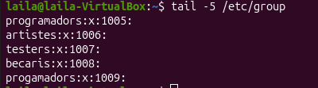
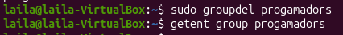
Nivell 4 · Afegir i treure usuaris dels grups
Afegir usuaris als grups i l’efecte de usermod -G sense la a, que substitueix els grups de l’usuari. Després es recuperen amb -aG.
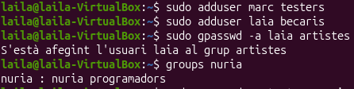
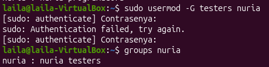
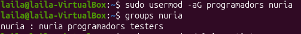
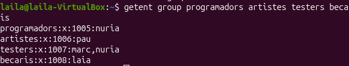
Nivell 5 · Canviar el grup principal
Canvi del grup principal amb usermod -g, i el grup dels fitxers creats abans i després del canvi.
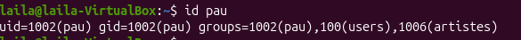
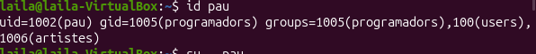
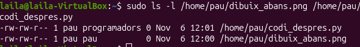
Nivell 6 · Bloquejar i desbloquejar un compte
Bloqueig de la contrasenya amb passwd -l, el ! a /etc/shadow, l’error en entrar i el desbloqueig amb passwd -u.
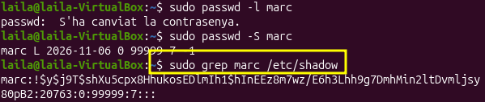
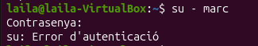
Nivell 7 · Canviar el nom d’un usuari
Canvi de nom d’usuari amb usermod -l, del grup amb groupmod -n i de la carpeta personal amb usermod -d -m.
Nivell 8 · Esborrar usuaris i grups
Esborrat d’un usuari amb userdel, que deixa la carpeta amb un UID orfe, i esborrat de la carpeta i del grup.
Permisos:
Nivell 0 · Muntar l’estudi
He creat la carpeta del projecte amb els quatre subdirectoris i els fitxers de prova, i després he revisat el resultat.
sudo mkdir -p /srv/pixelforge
cd /srv/pixelforge
sudo mkdir codi art proves compartit
sudo touch codi/joc.py art/logo.png proves/informe.txt
ls -l /srv/pixelforgeNivell 1 · Llegir els permisos
He mirat els permisos del fitxer i de la carpeta, i després les dades completes amb stat.
ls -l /srv/pixelforge/codi/joc.py
ls -ld /srv/pixelforge/codi
stat /srv/pixelforge/codi/joc.pyNivell 2 · chmod numèric
He canviat els permisos amb notació numèrica i he comprovat que els canvis s’apliquen.
sudo chmod -R 750 /srv/pixelforge/codi
ls -ld /srv/pixelforge/codi
ls -l /srv/pixelforge/codi
sudo chmod 755 /srv/pixelforge/art
sudo chmod 640 /srv/pixelforge/proves/informe.txt
ls -l /srv/pixelforge/provesNivell 3 · chmod simbòlic
He afegit i tret permisos amb notació simbòlica, i he comprovat cada pas amb ls -ld.
sudo chmod u-w /srv/pixelforge/art
ls -ld /srv/pixelforge/art
sudo chmod u+w /srv/pixelforge/art
sudo chmod o= /srv/pixelforge/art
ls -ld /srv/pixelforge/art
sudo chmod g+rx,o-w /srv/pixelforge/artNivell 4 · chown i chgrp · donar les carpetes als equips
He canviat el propietari i el grup de les carpetes per donar-les als equips, i he provat l’accés amb l’usuari pau.
sudo chown -R pau:programadors /srv/pixelforge/codi
ls -l /srv/pixelforge
sudo chgrp -R testers /srv/pixelforge/proves
ls -ld /srv/pixelforge/proves
su - pau
cd /srv/pixelforge/codi
touch nivell1.py
ls -l
touch /srv/pixelforge/proves/intrus.txt # Permission denied
exitNivell 5 · SGID · que els fitxers nous siguin de l’equip
He activat el bit SGID a la carpeta codi, i he comprovat que els fitxers nous hereten el grup programadors.
ls -ld /srv/pixelforge/codi
su - nvidal
touch /srv/pixelforge/codi/mapa.py
ls -l /srv/pixelforge/codi/mapa.py
exit
sudo chmod g+s /srv/pixelforge/codi
ls -ld /srv/pixelforge/codi
su - nvidal
touch /srv/pixelforge/codi/so.py
ls -l /srv/pixelforge/codi
exitNivell 6 · Sticky bit · la carpeta compartida
He compartit una carpeta on tots poden escriure, però només el propietari pot esborrar els seus fitxers, gràcies al sticky bit.
sudo chmod 777 /srv/pixelforge/compartit
su - pau
touch /srv/pixelforge/compartit/de_pau.txt
exit
su - marc
rm /srv/pixelforge/compartit/de_pau.txt # s’elimina, perquè encara no hi ha sticky bit
exit
sudo chmod +t /srv/pixelforge/compartit
ls -ld /srv/pixelforge/compartit
su - pau
touch /srv/pixelforge/compartit/de_pau.txt
exit
su - marc
rm /srv/pixelforge/compartit/de_pau.txt # L’operació no és permesa
exitNivell 7 · ACL · accés per a una persona de fora
He donat accés a l’usuari marc a la carpeta codi amb una ACL, i després he tret l’accés.
ls -l /srv/pixelforge/codi
sudo setfacl -m u:marc:rx /srv/pixelforge/codi
ls -ld /srv/pixelforge/codi
getfacl /srv/pixelforge/codi
su - marc
ls /srv/pixelforge/codi
exit
sudo setfacl -x u:marc /srv/pixelforge/codi
getfacl /srv/pixelforge/codiNivell 8 · umask i SUID
He comprovat la màscara per defecte (umask), he canviat el seu valor i he buscat els fitxers amb el bit SUID.
umask
cd ~
touch prova_umask.txt
mkdir prova_umask_dir
ls -ld prova_umask.txt prova_umask_dir
umask 027
touch prova2.txt
mkdir prova2_dir
ls -ld prova2.txt prova2_dir
ls -l /usr/bin/passwd
find /usr/bin -perm -4000 2>/dev/null